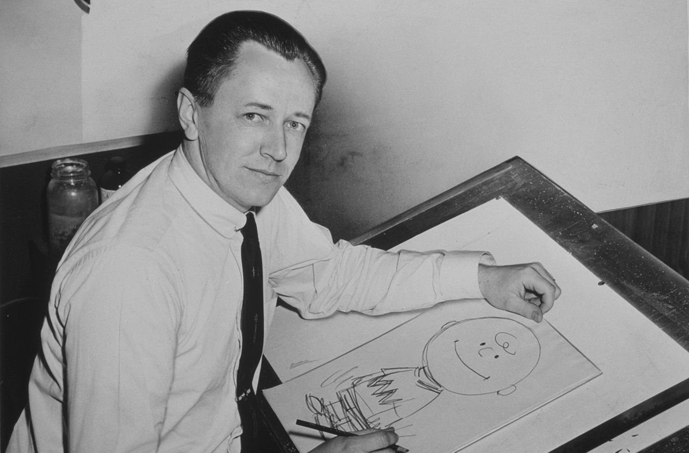

Charles M. Schulz
One of the Most influential cartoonists of all time.
Seen here in 1956 drawing his famous Charlie Brown character
Timeline of his rise to fame:
- 1922: Born in Minneapolis, MN
- 1937: Picture he drew and submitted of his dog appears in Ripley's Belive it or not!
- 1943: Drafted into united states Army to serve in world war II
- 1950: Sells Li'l folks to united ffeature syndicate, who decifess to rename the comic strip to Peanuts
- 1952: First full color version of Peanuts is published
- 1955: Schulz won the Reuben award for "outstanding cartoonist of the year" from the national caartoonists society
- 1964: Won Reuben award for "outstanding cartoonist of the year" making him the first person evert to recieve the award twice
- 1965: A Charlie Brown christmas, the first Peanuts animated television special, premiered on CBS
- 1966: The christmas special is awarded the george foster peabody award and an emmy award
- 1967: You're a Good man charlie Brown debuted off broadway
- 2000: Schulz dies in his sleep at home on February 12.
"Be yourself. No one can say you're doing it wrong."
--Charles M. Schulz
Click -> here <- to read the comics.